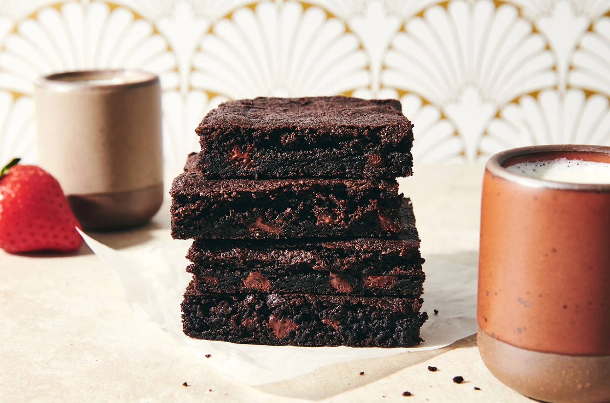

Quick and Easy Brownies
Home

A simple one-bowl recipe
This easy brownie recipe is what we reach for when we want something rich and chocolatey without the wait (like when we remember that potluck at the last minute). It's a simple one-bowl recipe — no melting chocolate, no separating wet and dry ingredients. The result is classic, moist brownies that rise ever so slightly during baking without veering into cakey territory. A handful of chocolate chips adds extra richness and deepens the chocolate flavor. Bake these easy brownies when you want to make a craveable, crowd-pleasing dessert with minimal effort.
Ingredients
- 1 cup (120g) Unbleached All-Purpose Flour
- 3/4 cup (64g) unsweetened cocoa, Dutch-process or natural
- 1 3/4 cups (347g) granulated sugar
- 1/2 teaspoon table salt
- 1/4 teaspoon baking powder
- 1 teaspoon espresso powder, optional; for enhanced chocolate flavor
- 3 large eggs
- 8 tablespoons (113g) unsalted butter, melted
- 1/4 cup (50g) vegetable oil
- 2 teaspoons King Arthur Pure Vanilla Extract
- 1 cup (170g) semisweet chocolate chips, optional
Steps
- Preheat the oven to 375°F. Lightly grease a 9" x 13" pan.
- In a large bowl, place all of the ingredients in the order listed. Stir, then beat the mixture until it's smooth.
- Spoon the batter into the prepared pan.
- Bake the brownies for about 25 minutes, or until they're just barely beginning to pull away from the sides of the pan. A toothpick inserted into the center will come out clean or with a few moist crumbs clinging to it; you shouldn't see any wet batter.
- Remove the brownies from the oven; let them cool completely before cutting.
- Store any leftover brownies, well-wrapped, at room temperature for 5 to 6 days. Freeze for longer storage.